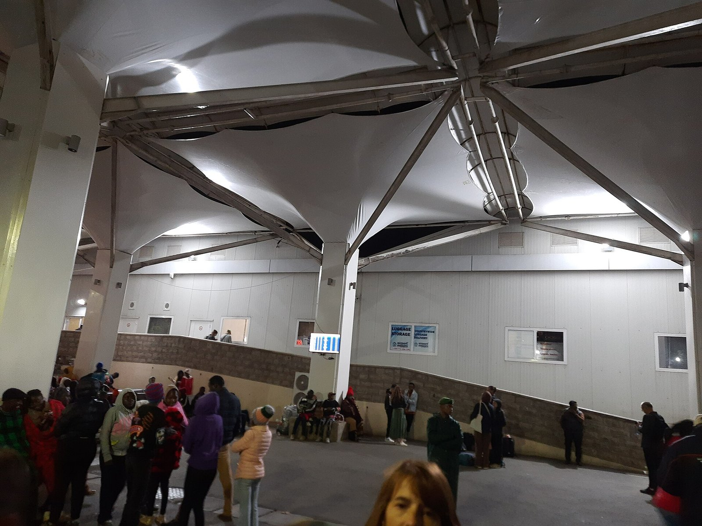

Photograph: Acacia tree with weaver nests next to dirt road in Samburu National Reserve, Kenya by Daniel Case, via Wikimedia Commons, CC BY-SA 4.0
Aviation is about to become carbon's biggest buyer. Kenya's rangelands are not on the list.
From 1 January every international airline starts buying carbon credits, and East Africa has spent the year selling them. Uganda authorised ten million tonnes, Rwanda 1.77 million, Tanzania signed again last Monday. Kenya, whose conservancies carry the region's safari industry, capped itself at 1.67 million a year and left land use out entirely.
Last Monday, in an office in Dodoma, someone signed a letter that will end up on the balance sheet of an airline in Europe. Tanzania's Office of the Vice President issued a Letter of Authorisation to BURN, the Nairobi-founded cookstove manufacturer, covering 785,000 tonnes of emission reductions from vintages 2022 to 2025. The letter permits those credits to be transferred internationally under Article 6.2 of the Paris Agreement, which is the technical condition that makes them sellable to aviation. Over 40 per cent of the volume is already committed under forward offtake agreements.
"This Letter of Approval marks an important step in BURN's mission to accelerate the transition to clean cooking for Tanzanian households," said Peter Scott, the company's founder and chief executive. It was the second such letter Dodoma has issued to BURN, and it reads like paperwork. It is not. It is East Africa taking a position in what is about to become the largest compliance carbon market in the world, and it throws into relief the one regional government taking a much smaller one.
On 1 January 2027, international aviation stops being a voluntary buyer of carbon credits. The Carbon Offsetting and Reduction Scheme for International Aviation, CORSIA, has run since 2021 on a volunteer basis, applying only to flights between states that opted in. From the first day of next year, according to the International Air Transport Association, all international flights become subject to offsetting requirements, with exemptions for least developed countries and small island states unless those states choose to participate anyway. Ninety-five days from today, a global industry acquires a legal obligation to buy something that barely exists in sufficient quantity.
The roster is published and worth reading carefully, because CORSIA works on state pairs: a flight is covered only when both the country it leaves and the country it arrives in appear on the list. ICAO's seventh edition of "CORSIA States for Chapter 3 State Pairs", issued on 16 July, names 134 states participating from 1 January 2027, up from 130 this year. The four additions are Brazil, China, India and the Russian Federation, brought in under the note at Annex 16, Volume IV, Part II, Chapter 3, paragraph 3.1.3. No state left.
Four East African governments are on it: Kenya, Rwanda, Uganda and the United Republic of Tanzania, each of them in both the 2026 and the 2027 list. One conspicuous name is not. Ethiopia does not appear on ICAO's list of participating states for either year, and neither does Burundi or Somalia.
That absence is worth a moment, because Addis Ababa is the largest long-haul hub on the continent. On the published list, a flight from Europe to Addis Ababa falls outside the offsetting requirement while a flight from the same European capital to Nairobi, Kigali, Entebbe or Dar es Salaam falls inside it. Whatever CORSIA ends up costing a carrier per seat, it will not cost it evenly across the routes that feed East African lodges.
The scale of the obligation is now fixed rather than theoretical. On 18 December last year, the International Civil Aviation Organization published the first growth factor, the number that converts the scheme's rules into a bill. It came out at 0.15405257, derived from actual 2024 international aviation emissions of 361.2 million tonnes against a baseline of 85 per cent of 2019 emissions, or 305.5 million tonnes. Offsetting applies only to the growth above that baseline, roughly 15 pence in every pound of covered emissions. ICAO's estimate of the first phase, covering 2024 to 2026, is four to five billion dollars for around 200 million credits.
The problem is the supply side, and it is not subtle. A credit only counts for CORSIA if the country where the project sits has issued a Letter of Authorisation and applied a corresponding adjustment to its own national accounts, so the tonne is not counted twice. As of April this year, by IATA's count, only ten countries had done so. The research firm Sylvera estimates first-phase demand at 177 million credits against roughly 32 million fully eligible today. Airlines have budgeted 18 to 20 dollars a credit. African cookstove credits in the voluntary market have been changing hands at two to three dollars.
That spread is the entire story. It is a seven-fold repricing of the same tonne, available to whichever government is willing to sign.
"What attracts us to CORSIA is that it's a known-demand market," Douglas Greenwell of BURN told African Business in June. Storm Patel of the advisory firm TASC put the constraint from the other side, describing the current authorisation system as creating "significant bottlenecks that are slowing the development and scaling of supply".
Three East African governments have moved decisively. On 10 August, Uganda's Ministry of Water and Environment authorised the carbon asset manager Econetix for ten million tonnes across vintages 2025 to 2030. "Ten million tonnes from Uganda is the largest single Letter of Authorization ever granted to a private company," said Jakob Zenz, Econetix's chief executive. Four days earlier, Rwanda's environment authority had authorised the same company for up to 1.77 million tonnes from a Verra-certified cookstove project run with its partner Likano. "Cleaner cooking for households on the ground, and high-integrity, CORSIA-eligible supply for the aviation market," Zenz said of it. Then Tanzania, last Monday.
Kenya went the other way. On 4 August the government published its carbon markets guide, and its headline number is a ceiling rather than a target: a national carbon budget of ten million tonnes of carbon dioxide equivalent for all international transfers through 2030, an annual allocation of 1.67 million tonnes. "It introduces a national carbon budget for trading to safeguard our Nationally Determined Contribution," said Deborah Barasa, the Environment Cabinet Secretary. Festus Ng'eno, the principal secretary, framed it as investor-friendly discipline: "Predictability, transparency, and institutional coherence are essential to attracting quality investment."
Read the two announcements side by side and the arithmetic is striking. A single Ugandan authorisation to one company is six times Kenya's entire annual export allowance for every project in the country.
The second detail in Kenya's guide matters more for anyone in hospitality. The priority list covers renewable energy, transport and waste. Forestry and land use are not on it, pending what officials describe as stronger emissions baselines, monitoring and safeguards against reversal risk. In a country whose most significant carbon projects are in rangelands, forests and mangroves, that is a considerable omission, described as temporary.
Kenya has reasons for caution that no one in Nairobi has to invent. On 30 January this year, KOKO Networks told 1.5 million customer households by text message that it was shutting down, laying off its entire workforce of roughly 700. The company sold stoves at a tenth of their market value and fuel below production cost, financing the gap with carbon revenue sold into compliance markets including aviation, and Kenya declined to issue the Letter of Authorisation it needed under the Climate Change (Carbon Markets) Regulations 2024. Ben Rattenbury of Sylvera called the collapse "a reality check for the market".
Here is where a lodge owner should start paying attention, because the conservancy is the point at which carbon policy becomes hospitality economics.
The Northern Kenya Rangelands Carbon Project covers more than two million hectares of savannah across 14 conservancies and involves over 175,000 people. Its revenue model sends 60 to 69 per cent of credit sales to the participating conservancies, rising as project risk falls, with the Northern Rangelands Trust recovering costs rather than taking profit. Inside each conservancy, 40 per cent of that money goes to operations and 60 per cent to community-selected development. Those are the same conservancies that host camps, employ guides and levy the conservation fees on a guest's invoice.
That project spent much of the past two years out of the market. A court ruling in January 2025 found that Biliqo Bulesa Conservancy had been established without the legal and community processes required on unregistered community land, which put the project in non-conformance with Verra's ownership rules and triggered a quality control review. The response was substantial: a free, prior and informed consent process under Kenya's Community Land Act, elected governance structures, more than 300 community meetings and an independently assessed ratification vote involving roughly 1,500 people. Verra reinstated the project on 18 June. "The review period has been a transformative journey for the project, strengthening its foundations," said Peter Lekurtut, chairperson of the transition committee. The appeal against the original ruling is still running under an injunction, and Verra has said future verifications will continue to assess compliance with the outcome.
So the largest rangeland carbon project in the region is trading again. Its credits are still not CORSIA-eligible, because that requires a Kenyan Letter of Authorisation with a corresponding adjustment, and land use is not on the published priority list.
Why this reaches the profit and loss account is a question of concentration. Kenya has more than 200 registered conservancies and, on the reasoning behind the Kenya Conservancies Fund launched on 23 April, only a small fraction generate enough revenue to sustain operations independently. That fund offers catalytic grants of roughly 5,000 to 120,000 dollars per conservancy. Useful money, and nothing like a second revenue line. Tourism remains the load-bearing beam under most conservancy budgets, which means bed-night fees are the thing that absorbs every shock, including the ones tourism did not cause.
One honest caveat, because it cuts against the alarmist version of this story. CORSIA will not price a European guest out of a safari. Offsetting applies to growth above the baseline, not to all emissions, which on the 2024 growth factor is around 15 per cent of the covered total, and ICAO's four to five billion dollars spread across three years of global international traffic is a rounding error on a long-haul fare. The Ethiopian gap in the state-pair list is a real asymmetry, but it is an asymmetry in a small number, and nobody should expect it to redraw the region's routings on its own. Anyone selling a lodge software, consultancy or credits on the premise that aviation carbon costs are about to hit inbound demand is selling something. The transmission runs the other way, through the land rather than the ticket.
There is also a claim an operator can no longer make about any of it. The EU's Empowering Consumers directive applied from yesterday, and bans outright any claim that a product has a neutral or reduced climate effect on the strength of offsets bought outside the business's own value chain. Whatever carbon money reaches a conservancy, it cannot become a carbon-neutral safari in a European brochure.
That leaves three questions for the coming quarter. Whether the conservancy your camp sits on has a carbon project at all, and if so what its authorisation status is, since only an authorised project touches aviation pricing. Whether the community land beneath it is registered under the Community Land Act, because a European tour operator's due diligence will reach that question sooner than a Kenyan regulator will. And whether next year's budget assumes conservancy fees stay flat, because on current policy they are the only line with anywhere to go.
The letter signed in Dodoma last Monday moves 785,000 tonnes of Tanzanian cookstove reductions towards an aviation market that does not have enough of them. Kampala has authorised ten million. Kigali nearly two. The rangelands that the region's highest-yielding tourism is built on are, for now, holding a product the world's newest compliance buyer wants and cannot legally purchase.
📣 Telegram 💬 WhatsApp 💼 LinkedIn 📚 All guides